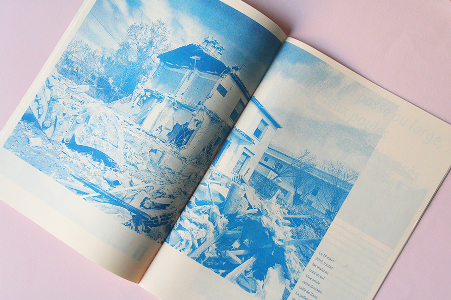

Mélancolie et doux souvenirs font face à la brutalité de se
faire expulser de sa maison.
Edition rendant compte du
projet pictural "Home Sweet Home" de Alias IPIN (Germain Prévost).
Edition de 36 pages en risographie, tirée à 250 exemplaires
Pour les éditions Juste Ici
Mai 2017
